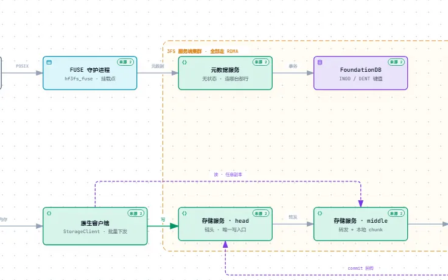
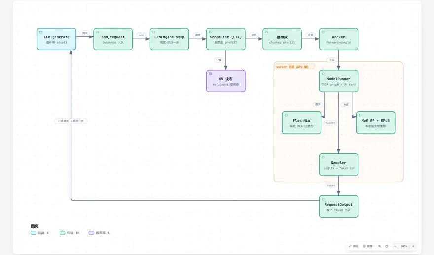
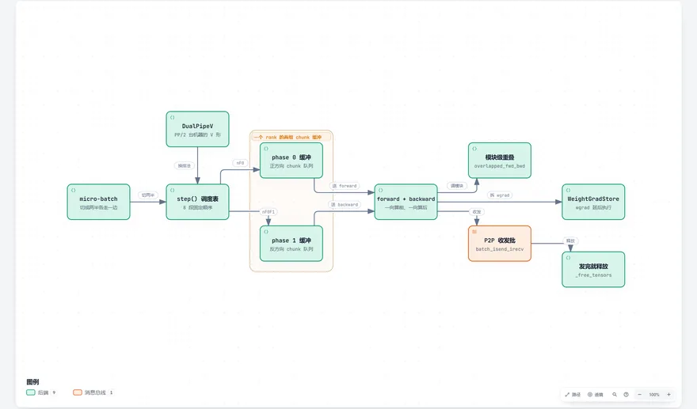

分布式与数据 5
Distributed Systems & Data · 多机多盘之间，数据怎么放、怎么跑

3FSdeepseek-ai/3FS
3FS keeps three copies of every chunk in a chain: writes hit the head, reads go to any replica.

smallponddeepseek-ai/smallpond
smallpond splits a dataframe job into tasks and runs each one in a throwaway DuckDB process on 3FS.

DeepInferdeepseek-ai/DeepInfer
DeepInfer queues requests, batches them, and moves the bookkeeping off the critical path so the GPU never idles.

DualPipedeepseek-ai/DualPipe
DualPipe fills the idle gaps of pipeline parallelism by running two directions at once.

profile-datadeepseek-ai/profile-data
profile-data is three PyTorch profiler traces: overlay compute and communication to see whether they overlap.